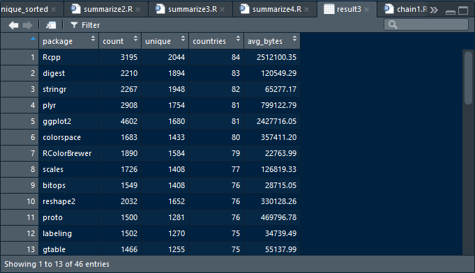

Grouping and Chaining with dplyr
R version 3.6.3 (2020-02-29) -- "Holding the Windsock"
Copyright (C) 2020 The R Foundation for Statistical Computing
Platform: x86_64-w64-mingw32/x64 (64-bit)
R is free software and comes with ABSOLUTELY NO WARRANTY.
You are welcome to redistribute it under certain conditions.
Type 'license()' or 'licence()' for distribution details.
R is a collaborative project with many contributors.
Type 'contributors()' for more information and
'citation()' on how to cite R or R packages in publications.
Type 'demo()' for some demos, 'help()' for on-line help, or
'help.start()' for an HTML browser interface to help.
Type 'q()' to quit R.
[Workspace loaded from C:/Users/kk/PortableApps/Git/home/k-allika/repos/DataScienceWithR/.RData]
setwd("C:/Users/kk/PortableApps/Git/home/k-allika/repos/DataScienceWithR/03_Getting_and_Cleaning_Data/Week03/workspace")
library(swirl)
| Hi! Type swirl() when you are ready to begin.
swirl()
| Welcome to swirl! Please sign in. If you've been here before, use the same name as you
| did then. If you are new, call yourself something unique.
What shall I call you? Krishnakanth allika
| Please choose a course, or type 0 to exit swirl.
1: Getting and Cleaning Data
2: R Programming
3: Take me to the swirl course repository!
Selection: 1
| Please choose a lesson, or type 0 to return to course menu.
1: Manipulating Data with dplyr
2: Grouping and Chaining with dplyr
3: Tidying Data with tidyr
4: Dates and Times with lubridate
Selection: 2
| Attempting to load lesson dependencies...
| Package ‘dplyr’ loaded correctly!
| | 0%
| Warning: This lesson makes use of the View() function. View() may not work properly in
| every programming environment. We highly recommend the use of RStudio for this lesson.
...
|== | 2%
| In the last lesson, you learned about the five main data manipulation 'verbs' in dplyr:
| select(), filter(), arrange(), mutate(), and summarize(). The last of these,
| summarize(), is most powerful when applied to grouped data.
...
|=== | 4%
| The main idea behind grouping data is that you want to break up your dataset into
| groups of rows based on the values of one or more variables. The group_by() function is
| reponsible for doing this.
...
|===== | 6%
| We'll continue where we left off with RStudio's CRAN download log from July 8, 2014,
| which contains information on roughly 225,000 R package downloads
| (http://cran-logs.rstudio.com/).
...
|====== | 8%
| As with the last lesson, the dplyr package was automatically installed (if necessary)
| and loaded at the beginning of this lesson. Normally, this is something you would have
| to do on your own. Just to build the habit, type library(dplyr) now to load the package
| again.
library(dplyr)
| That's the answer I was looking for.
|======== | 10%
| I've made the dataset available to you in a data frame called mydf. Put it in a 'data
| frame tbl' using the tbl_df() function and store the result in a object called cran. If
| you're not sure what I'm talking about, you should start with the previous lesson.
| Otherwise, practice makes perfect!
cran<-as_tibble(mydf)
| Not exactly. Give it another go. Or, type info() for more options.
| Type cran <- tbl_df(mydf) to store the data in a new tbl_df called cran.
cran<-tbl_df(mydf)
| You are doing so well!
|========= | 12%
| To avoid confusion and keep things running smoothly, let's remove the original
| dataframe from your workspace with rm("mydf").
rm("mydf")
| All that hard work is paying off!
|=========== | 13%
| Print cran to the console.
cran
# A tibble: 225,468 x 11
X date time size r_version r_arch r_os package version country ip_id
1 1 2014-07~ 00:54:~ 80589 3.1.0 x86_64 mingw32 htmltools 0.2.4 US 1
2 2 2014-07~ 00:59:~ 321767 3.1.0 x86_64 mingw32 tseries 0.10-32 US 2
3 3 2014-07~ 00:47:~ 748063 3.1.0 x86_64 linux-~ party 1.0-15 US 3
4 4 2014-07~ 00:48:~ 606104 3.1.0 x86_64 linux-~ Hmisc 3.14-4 US 3
5 5 2014-07~ 00:46:~ 79825 3.0.2 x86_64 linux-~ digest 0.6.4 CA 4
6 6 2014-07~ 00:48:~ 77681 3.1.0 x86_64 linux-~ randomFo~ 4.6-7 US 3
7 7 2014-07~ 00:48:~ 393754 3.1.0 x86_64 linux-~ plyr 1.8.1 US 3
8 8 2014-07~ 00:47:~ 28216 3.0.2 x86_64 linux-~ whisker 0.3-2 US 5
9 9 2014-07~ 00:54:~ 5928 NA NA NA Rcpp 0.10.4 CN 6
10 10 2014-07~ 00:15:~ 2206029 3.0.2 x86_64 linux-~ hflights 0.1 US 7
# ... with 225,458 more rows
| You nailed it! Good job!
|============ | 15%
| Our first goal is to group the data by package name. Bring up the help file for
| group_by().
group_by(cran,package)
# A tibble: 225,468 x 11
# Groups: package [6,023]
X date time size r_version r_arch r_os package version country ip_id
1 1 2014-07~ 00:54:~ 80589 3.1.0 x86_64 mingw32 htmltools 0.2.4 US 1
2 2 2014-07~ 00:59:~ 321767 3.1.0 x86_64 mingw32 tseries 0.10-32 US 2
3 3 2014-07~ 00:47:~ 748063 3.1.0 x86_64 linux-~ party 1.0-15 US 3
4 4 2014-07~ 00:48:~ 606104 3.1.0 x86_64 linux-~ Hmisc 3.14-4 US 3
5 5 2014-07~ 00:46:~ 79825 3.0.2 x86_64 linux-~ digest 0.6.4 CA 4
6 6 2014-07~ 00:48:~ 77681 3.1.0 x86_64 linux-~ randomFo~ 4.6-7 US 3
7 7 2014-07~ 00:48:~ 393754 3.1.0 x86_64 linux-~ plyr 1.8.1 US 3
8 8 2014-07~ 00:47:~ 28216 3.0.2 x86_64 linux-~ whisker 0.3-2 US 5
9 9 2014-07~ 00:54:~ 5928 NA NA NA Rcpp 0.10.4 CN 6
10 10 2014-07~ 00:15:~ 2206029 3.0.2 x86_64 linux-~ hflights 0.1 US 7
# ... with 225,458 more rows
| Keep trying! Or, type info() for more options.
| Use ?group_by to bring up the documentation.
cran %>% group_by(package)
# A tibble: 225,468 x 11
# Groups: package [6,023]
X date time size r_version r_arch r_os package version country ip_id
1 1 2014-07~ 00:54:~ 80589 3.1.0 x86_64 mingw32 htmltools 0.2.4 US 1
2 2 2014-07~ 00:59:~ 321767 3.1.0 x86_64 mingw32 tseries 0.10-32 US 2
3 3 2014-07~ 00:47:~ 748063 3.1.0 x86_64 linux-~ party 1.0-15 US 3
4 4 2014-07~ 00:48:~ 606104 3.1.0 x86_64 linux-~ Hmisc 3.14-4 US 3
5 5 2014-07~ 00:46:~ 79825 3.0.2 x86_64 linux-~ digest 0.6.4 CA 4
6 6 2014-07~ 00:48:~ 77681 3.1.0 x86_64 linux-~ randomFo~ 4.6-7 US 3
7 7 2014-07~ 00:48:~ 393754 3.1.0 x86_64 linux-~ plyr 1.8.1 US 3
8 8 2014-07~ 00:47:~ 28216 3.0.2 x86_64 linux-~ whisker 0.3-2 US 5
9 9 2014-07~ 00:54:~ 5928 NA NA NA Rcpp 0.10.4 CN 6
10 10 2014-07~ 00:15:~ 2206029 3.0.2 x86_64 linux-~ hflights 0.1 US 7
# ... with 225,458 more rows
| You almost had it, but not quite. Try again. Or, type info() for more options.
| Use ?group_by to bring up the documentation.
?group_by
| Your dedication is inspiring!
|============== | 17%
| Group cran by the package variable and store the result in a new object called
| by_package.
by_package<-cran %>% group_by(package)
| That's not the answer I was looking for, but try again. Or, type info() for more
| options.
| Store the result of group_by(cran, package) in a new object called by_package.
by_package<-group_by(cran,package)
| You got it right!
|=============== | 19%
| Let's take a look at by_package. Print it to the console.
by_package
# A tibble: 225,468 x 11
# Groups: package [6,023]
X date time size r_version r_arch r_os package version country ip_id
1 1 2014-07~ 00:54:~ 80589 3.1.0 x86_64 mingw32 htmltools 0.2.4 US 1
2 2 2014-07~ 00:59:~ 321767 3.1.0 x86_64 mingw32 tseries 0.10-32 US 2
3 3 2014-07~ 00:47:~ 748063 3.1.0 x86_64 linux-~ party 1.0-15 US 3
4 4 2014-07~ 00:48:~ 606104 3.1.0 x86_64 linux-~ Hmisc 3.14-4 US 3
5 5 2014-07~ 00:46:~ 79825 3.0.2 x86_64 linux-~ digest 0.6.4 CA 4
6 6 2014-07~ 00:48:~ 77681 3.1.0 x86_64 linux-~ randomFo~ 4.6-7 US 3
7 7 2014-07~ 00:48:~ 393754 3.1.0 x86_64 linux-~ plyr 1.8.1 US 3
8 8 2014-07~ 00:47:~ 28216 3.0.2 x86_64 linux-~ whisker 0.3-2 US 5
9 9 2014-07~ 00:54:~ 5928 NA NA NA Rcpp 0.10.4 CN 6
10 10 2014-07~ 00:15:~ 2206029 3.0.2 x86_64 linux-~ hflights 0.1 US 7
# ... with 225,458 more rows
| Excellent work!
|================= | 21%
| At the top of the output above, you'll see 'Groups: package', which tells us that this
| tbl has been grouped by the package variable. Everything else looks the same, but now
| any operation we apply to the grouped data will take place on a per package basis.
...
|================== | 23%
| Recall that when we applied mean(size) to the original tbl_df via summarize(), it
| returned a single number -- the mean of all values in the size column. We may care
| about what that number is, but wouldn't it be so much more interesting to look at the
| mean download size for each unique package?
...
|==================== | 25%
| That's exactly what you'll get if you use summarize() to apply mean(size) to the
| grouped data in by_package. Give it a shot.
summarise(by_package,mean(size))
# A tibble: 6,023 x 2
packagemean(size)
1 A3 62195.
2 abc 4826665
3 abcdeFBA 455980.
4 ABCExtremes 22904.
5 ABCoptim 17807.
6 ABCp2 30473.
7 abctools 2589394
8 abd 453631.
9 abf2 35693.
10 abind 32939.
# ... with 6,013 more rows
| You got it right!
|====================== | 27%
| Instead of returning a single value, summarize() now returns the mean size for EACH
| package in our dataset.
...
|======================= | 29%
| Let's take it a step further. I just opened an R script for you that contains a
| partially constructed call to summarize(). Follow the instructions in the script
| comments.
|
| When you are ready to move on, save the script and type submit(), or type reset() to
| reset the script to its original state.
play()
| Entering play mode. Experiment as you please, then type nxt() when you are ready to
| resume the lesson.
?n
?n_distinct
nxt()
| Resuming lesson...
| Let's take it a step further. I just opened an R script for you that contains a
| partially constructed call to summarize(). Follow the instructions in the script
| comments.
|
| When you are ready to move on, save the script and type submit(), or type reset() to
| reset the script to its original state.
{r}
# Compute four values, in the following order, from
# the grouped data:
#
# 1. count = n()
# 2. unique = n_distinct(ip_id)
# 3. countries = n_distinct(country)
# 4. avg_bytes = mean(size)
#
# A few thing to be careful of:
#
# 1. Separate arguments by commas
# 2. Make sure you have a closing parenthesis
# 3. Check your spelling!
# 4. Store the result in pack_sum (for 'package summary')
#
# You should also take a look at ?n and ?n_distinct, so
# that you really understand what is going on.
pack_sum <- summarize(by_package,
count = n(),
unique = n_distinct(ip_id),
countries = n_distinct(country),
avg_bytes = mean(size))submit()
| Sourcing your script...
| You are doing so well!
|========================= | 31%
| Print the resulting tbl, pack_sum, to the console to examine its contents.
pack_sum
# A tibble: 6,023 x 5
package count unique countries avg_bytes
1 A3 25 24 10 62195.
2 abc 29 25 16 4826665
3 abcdeFBA 15 15 9 455980.
4 ABCExtremes 18 17 9 22904.
5 ABCoptim 16 15 9 17807.
6 ABCp2 18 17 10 30473.
7 abctools 19 19 11 2589394
8 abd 17 16 10 453631.
9 abf2 13 13 9 35693.
10 abind 396 365 50 32939.
# ... with 6,013 more rows
| That's the answer I was looking for.
|========================== | 33%
| The 'count' column, created with n(), contains the total number of rows (i.e.
| downloads) for each package. The 'unique' column, created with n_distinct(ip_id), gives
| the total number of unique downloads for each package, as measured by the number of
| distinct ip_id's. The 'countries' column, created with n_distinct(country), provides
| the number of countries in which each package was downloaded. And finally, the
| 'avg_bytes' column, created with mean(size), contains the mean download size (in bytes)
| for each package.
...
|============================ | 35%
| It's important that you understand how each column of pack_sum was created and what it
| means. Now that we've summarized the data by individual packages, let's play around
| with it some more to see what we can learn.
...
|============================= | 37%
| Naturally, we'd like to know which packages were most popular on the day these data
| were collected (July 8, 2014). Let's start by isolating the top 1% of packages, based
| on the total number of downloads as measured by the 'count' column.
...
|=============================== | 38%
| We need to know the value of 'count' that splits the data into the top 1% and bottom
| 99% of packages based on total downloads. In statistics, this is called the 0.99, or
| 99%, sample quantile. Use quantile(pack_sum$count, probs = 0.99) to determine this
| number.
quantile(pack_sum$count, probs = 0.99)
99%
679.56
| You're the best!
|================================ | 40%
| Now we can isolate only those packages which had more than 679 total downloads. Use
| filter() to select all rows from pack_sum for which 'count' is strictly greater (>)
| than 679. Store the result in a new object called top_counts.
top_counts<-filter(pack_sum,count>679)
| You are doing so well!
|================================== | 42%
| Let's take a look at top_counts. Print it to the console.
top_counts
# A tibble: 61 x 5
package count unique countries avg_bytes
1 bitops 1549 1408 76 28715.
2 car 1008 837 64 1229122.
3 caTools 812 699 64 176589.
4 colorspace 1683 1433 80 357411.
5 data.table 680 564 59 1252721.
6 DBI 2599 492 48 206933.
7 devtools 769 560 55 212933.
8 dichromat 1486 1257 74 134732.
9 digest 2210 1894 83 120549.
10 doSNOW 740 75 24 8364.
# ... with 51 more rows
| You are amazing!
|=================================== | 44%
| There are only 61 packages in our top 1%, so we'd like to see all of them. Since dplyr
| only shows us the first 10 rows, we can use the View() function to see more.
...
|===================================== | 46%
| View all 61 rows with View(top_counts). Note that the 'V' in View() is capitalized.
View(top_counts)

| You're the best!
|====================================== | 48%
| arrange() the rows of top_counts based on the 'count' column and assign the result to a
| new object called top_counts_sorted. We want the packages with the highest number of
| downloads at the top, which means we want 'count' to be in descending order. If you
| need help, check out ?arrange and/or ?desc.
top_counts_sorted<-arrange(top_counts,count)
| Almost! Try again. Or, type info() for more options.
| arrange(top_counts, desc(count)) will arrange the rows of top_counts based on the
| values of the 'count' variable, in descending order. Don't forget to assign the result
| to top_counts_sorted.
top_counts_sorted<-arrange(top_counts,desc(count))
| All that hard work is paying off!
|======================================== | 50%
| Now use View() again to see all 61 rows of top_counts_sorted.
View(top_counts_sorted)

| You are amazing!
|========================================== | 52%
| If we use total number of downloads as our metric for popularity, then the above output
| shows us the most popular packages downloaded from the RStudio CRAN mirror on July 8,
| 2014. Not surprisingly, ggplot2 leads the pack with 4602 downloads, followed by Rcpp,
| plyr, rJava, ....
...
|=========================================== | 54%
| ...And if you keep on going, you'll see swirl at number 43, with 820 total downloads.
| Sweet!
...
|============================================= | 56%
| Perhaps we're more interested in the number of unique downloads on this particular
| day. In other words, if a package is downloaded ten times in one day from the same
| computer, we may wish to count that as only one download. That's what the 'unique'
| column will tell us.
...
|============================================== | 58%
| Like we did with 'count', let's find the 0.99, or 99%, quantile for the 'unique'
| variable with quantile(pack_sum$unique, probs = 0.99).
quantile(pack_sum$unique,probs = 0.99)
99%
465
| Nice work!
|================================================ | 60%
| Apply filter() to pack_sum to select all rows corresponding to values of 'unique' that
| are strictly greater than 465. Assign the result to a object called top_unique.
top_unique<-filter(pack_sum,unique>465)
| Keep up the great work!
|================================================= | 62%
| Let's View() our top contenders!
View(top_unique)

| That's a job well done!
|=================================================== | 63%
| Now arrange() top_unique by the 'unique' column, in descending order, to see which
| packages were downloaded from the greatest number of unique IP addresses. Assign the
| result to top_unique_sorted.
top_unique_sorted<-arrange(top_unique,desc(unique))
| You are really on a roll!
|==================================================== | 65%
| View() the sorted data.
View(top_unique_sorted)

| All that practice is paying off!
|====================================================== | 67%
| Now Rcpp is in the lead, followed by stringr, digest, plyr, and ggplot2. swirl moved up
| a few spaces to number 40, with 698 unique downloads. Nice!
...
|======================================================= | 69%
| Our final metric of popularity is the number of distinct countries from which each
| package was downloaded. We'll approach this one a little differently to introduce you
| to a method called 'chaining' (or 'piping').
...
|========================================================= | 71%
| Chaining allows you to string together multiple function calls in a way that is compact
| and readable, while still accomplishing the desired result. To make it more concrete,
| let's compute our last popularity metric from scratch, starting with our original data.
...
|========================================================== | 73%
| I've opened up a script that contains code similar to what you've seen so far. Don't
| change anything. Just study it for a minute, make sure you understand everything that's
| there, then submit() when you are ready to move on.
{r}
# Don't change any of the code below. Just type submit()
# when you think you understand it.
# We've already done this part, but we're repeating it
# here for clarity.
by_package <- group_by(cran, package)
pack_sum <- summarize(by_package,
count = n(),
unique = n_distinct(ip_id),
countries = n_distinct(country),
avg_bytes = mean(size))
# Here's the new bit, but using the same approach we've
# been using this whole time.
top_countries <- filter(pack_sum, countries > 60)
result1 <- arrange(top_countries, desc(countries), avg_bytes)
# Print the results to the console.
print(result1)submit()
| Sourcing your script...
# A tibble: 46 x 5
package count unique countries avg_bytes
1 Rcpp 3195 2044 84 2512100.
2 digest 2210 1894 83 120549.
3 stringr 2267 1948 82 65277.
4 plyr 2908 1754 81 799123.
5 ggplot2 4602 1680 81 2427716.
6 colorspace 1683 1433 80 357411.
7 RColorBrewer 1890 1584 79 22764.
8 scales 1726 1408 77 126819.
9 bitops 1549 1408 76 28715.
10 reshape2 2032 1652 76 330128.
# ... with 36 more rows
| That's a job well done!
|============================================================ | 75%
| It's worth noting that we sorted primarily by country, but used avg_bytes (in ascending
| order) as a tie breaker. This means that if two packages were downloaded from the same
| number of countries, the package with a smaller average download size received a higher
| ranking.
...
|============================================================== | 77%
| We'd like to accomplish the same result as the last script, but avoid saving our
| intermediate results. This requires embedding function calls within one another.
...
|=============================================================== | 79%
| That's exactly what we've done in this script. The result is equivalent, but the code
| is much less readable and some of the arguments are far away from the function to which
| they belong. Again, just try to understand what is going on here, then submit() when
| you are ready to see a better solution.
{r}
# Don't change any of the code below. Just type submit()
# when you think you understand it. If you find it
# confusing, you're absolutely right!
result2 <-
arrange(
filter(
summarize(
group_by(cran,
package
),
count = n(),
unique = n_distinct(ip_id),
countries = n_distinct(country),
avg_bytes = mean(size)
),
countries > 60
),
desc(countries),
avg_bytes
)
print(result2)submit()
| Sourcing your script...
# A tibble: 46 x 5
package count unique countries avg_bytes
1 Rcpp 3195 2044 84 2512100.
2 digest 2210 1894 83 120549.
3 stringr 2267 1948 82 65277.
4 plyr 2908 1754 81 799123.
5 ggplot2 4602 1680 81 2427716.
6 colorspace 1683 1433 80 357411.
7 RColorBrewer 1890 1584 79 22764.
8 scales 1726 1408 77 126819.
9 bitops 1549 1408 76 28715.
10 reshape2 2032 1652 76 330128.
# ... with 36 more rows
| That's a job well done!
|================================================================= | 81%
| In this script, we've used a special chaining operator, %>%, which was originally
| introduced in the magrittr R package and has now become a key component of dplyr. You
| can pull up the related documentation with ?chain. The benefit of %>% is that it allows
| us to chain the function calls in a linear fashion. The code to the right of %>%
| operates on the result from the code to the left of %>%.
|
| Once again, just try to understand the code, then type submit() to continue.
{r}
# Read the code below, but don't change anything. As
# you read it, you can pronounce the %>% operator as
# the word 'then'.
#
# Type submit() when you think you understand
# everything here.
result3 <-
cran %>%
group_by(package) %>%
summarize(count = n(),
unique = n_distinct(ip_id),
countries = n_distinct(country),
avg_bytes = mean(size)
) %>%
filter(countries > 60) %>%
arrange(desc(countries), avg_bytes)
# Print result to console
print(result3)submit()
| Sourcing your script...
# A tibble: 46 x 5
package count unique countries avg_bytes
1 Rcpp 3195 2044 84 2512100.
2 digest 2210 1894 83 120549.
3 stringr 2267 1948 82 65277.
4 plyr 2908 1754 81 799123.
5 ggplot2 4602 1680 81 2427716.
6 colorspace 1683 1433 80 357411.
7 RColorBrewer 1890 1584 79 22764.
8 scales 1726 1408 77 126819.
9 bitops 1549 1408 76 28715.
10 reshape2 2032 1652 76 330128.
# ... with 36 more rows
| You nailed it! Good job!
|================================================================== | 83%
| So, the results of the last three scripts are all identical. But, the third script
| provides a convenient and concise alternative to the more traditional method that we've
| taken previously, which involves saving results as we go along.
...
|==================================================================== | 85%
| Once again, let's View() the full data, which has been stored in result3.
View(result3)

| That's correct!
|===================================================================== | 87%
| It looks like Rcpp is on top with downloads from 84 different countries, followed by
| digest, stringr, plyr, and ggplot2. swirl jumped up the rankings again, this time to
| 27th.
...
|======================================================================= | 88%
| To help drive the point home, let's work through a few more examples of chaining.
...
|======================================================================== | 90%
| Let's build a chain of dplyr commands one step at a time, starting with the script I
| just opened for you.
{r}
# select() the following columns from cran. Keep in mind
# that when you're using the chaining operator, you don't
# need to specify the name of the data tbl in your call to
# select().
#
# 1. ip_id
# 2. country
# 3. package
# 4. size
#
# The call to print() at the end of the chain is optional,
# but necessary if you want your results printed to the
# console. Note that since there are no additional arguments
# to print(), you can leave off the parentheses after
# the function name. This is a convenient feature of the %>%
# operator.
cran %>%
select(ip_id,country,package,size) %>%
printsubmit()
| Sourcing your script...
# A tibble: 225,468 x 4
ip_id country package size
1 1 US htmltools 80589
2 2 US tseries 321767
3 3 US party 748063
4 3 US Hmisc 606104
5 4 CA digest 79825
6 3 US randomForest 77681
7 3 US plyr 393754
8 5 US whisker 28216
9 6 CN Rcpp 5928
10 7 US hflights 2206029
# ... with 225,458 more rows
| All that hard work is paying off!
|========================================================================== | 92%
| Let's add to the chain.
{r}
# Use mutate() to add a column called size_mb that contains
# the size of each download in megabytes (i.e. size / 2^20).
#
# If you want your results printed to the console, add
# print to the end of your chain.
cran %>%
select(ip_id, country, package, size) %>%
mutate(size_mb=size/2^20) %>%
printsubmit()
| Sourcing your script...
# A tibble: 225,468 x 5
ip_id country package size size_mb
1 1 US htmltools 80589 0.0769
2 2 US tseries 321767 0.307
3 3 US party 748063 0.713
4 3 US Hmisc 606104 0.578
5 4 CA digest 79825 0.0761
6 3 US randomForest 77681 0.0741
7 3 US plyr 393754 0.376
8 5 US whisker 28216 0.0269
9 6 CN Rcpp 5928 0.00565
10 7 US hflights 2206029 2.10
# ... with 225,458 more rows
| All that practice is paying off!
|=========================================================================== | 94%
| A little bit more now.
{r}
# Use filter() to select all rows for which size_mb is
# less than or equal to (<=) 0.5.
#
# If you want your results printed to the console, add
# print to the end of your chain.
cran %>%
select(ip_id, country, package, size) %>%
mutate(size_mb = size / 2^20) %>%
# Your call to filter() goes here
filter(size_mb<=0.5) %>%
printsubmit()
| Sourcing your script...
# A tibble: 142,021 x 5
ip_id country package size size_mb
1 1 US htmltools 80589 0.0769
2 2 US tseries 321767 0.307
3 4 CA digest 79825 0.0761
4 3 US randomForest 77681 0.0741
5 3 US plyr 393754 0.376
6 5 US whisker 28216 0.0269
7 6 CN Rcpp 5928 0.00565
8 13 DE ipred 186685 0.178
9 14 US mnormt 36204 0.0345
10 16 US iterators 289972 0.277
# ... with 142,011 more rows
| You got it!
|============================================================================= | 96%
| And finish it off.
{r}
# arrange() the result by size_mb, in descending order.
#
# If you want your results printed to the console, add
# print to the end of your chain.
cran %>%
select(ip_id, country, package, size) %>%
mutate(size_mb = size / 2^20) %>%
filter(size_mb <= 0.5) %>%
# Your call to arrange() goes here
arrange(desc(size_mb)) %>%
printsubmit()
| Sourcing your script...
# A tibble: 142,021 x 5
ip_id country package size size_mb
1 11034 DE phia 524232 0.500
2 9643 US tis 524152 0.500
3 1542 IN RcppSMC 524060 0.500
4 12354 US lessR 523916 0.500
5 12072 US colorspace 523880 0.500
6 2514 KR depmixS4 523863 0.500
7 1111 US depmixS4 523858 0.500
8 8865 CR depmixS4 523858 0.500
9 5908 CN RcmdrPlugin.KMggplot2 523852 0.500
10 12354 US RcmdrPlugin.KMggplot2 523852 0.500
# ... with 142,011 more rows
| You got it!
|============================================================================== | 98%
| In this lesson, you learned about grouping and chaining using dplyr. You combined some
| of the things you learned in the previous lesson with these more advanced ideas to
| produce concise, readable, and highly effective code. Welcome to the wonderful world of
| dplyr!
...
|================================================================================| 100%
| Would you like to receive credit for completing this course on Coursera.org?
1: Yes
2: No
Selection: 1
What is your email address? xxxxxx@xxxxxxxxxxxx
What is your assignment token? xXxXxxXXxXxxXXXx
Grade submission succeeded!
| Perseverance, that's the answer.
| You've reached the end of this lesson! Returning to the main menu...
| Please choose a course, or type 0 to exit swirl.
1: Getting and Cleaning Data
2: R Programming
3: Take me to the swirl course repository!
Selection: 0
| Leaving swirl now. Type swirl() to resume.
ls()
[1] "by_package" "cran" "pack_sum" "result1"
[5] "result2" "result3" "top_countries" "top_counts"
[9] "top_counts_sorted" "top_unique" "top_unique_sorted"
rm(list=ls())
Last updated 2020-04-23 21:01:55.271179 IST